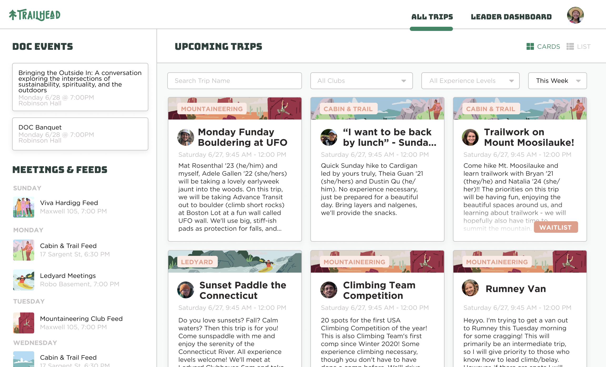
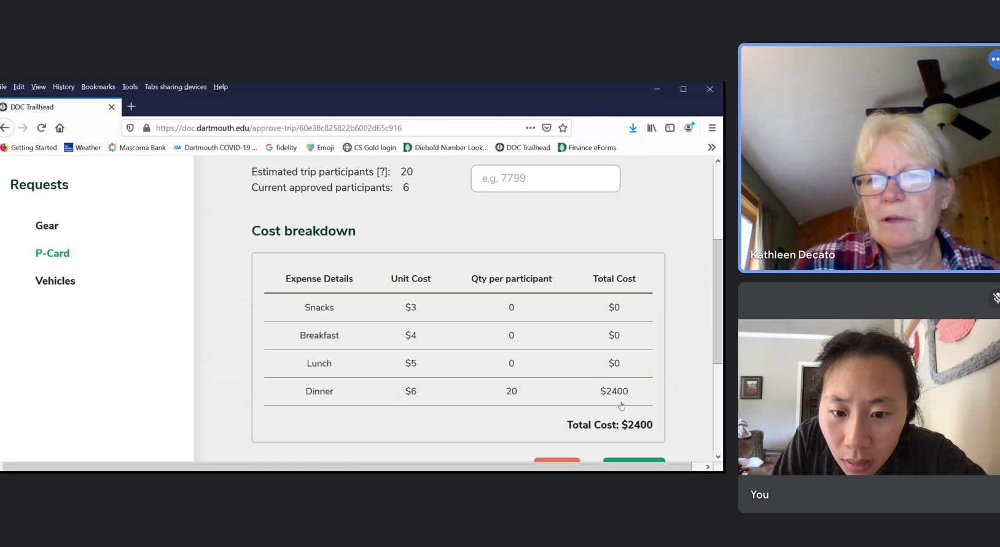
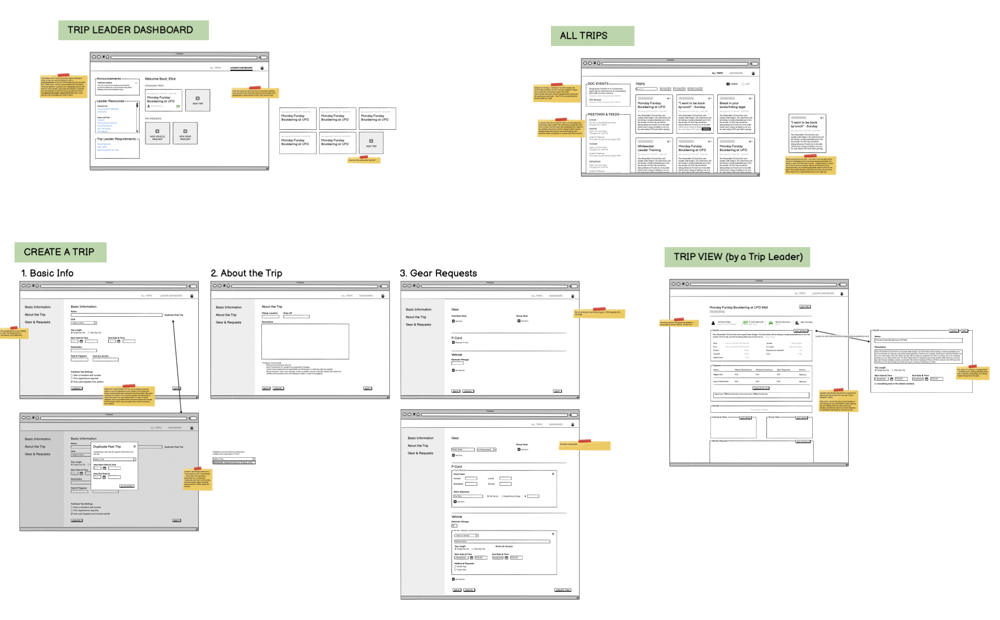
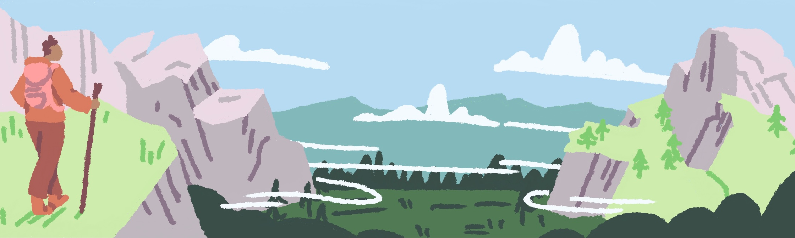
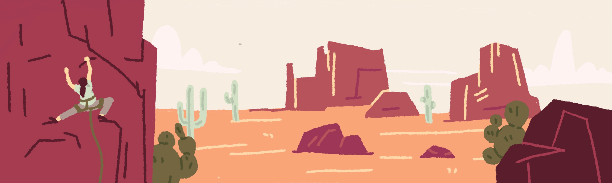
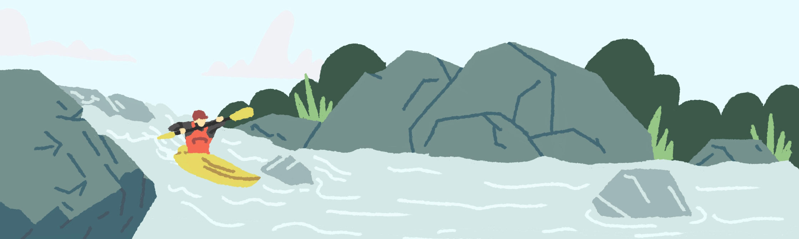
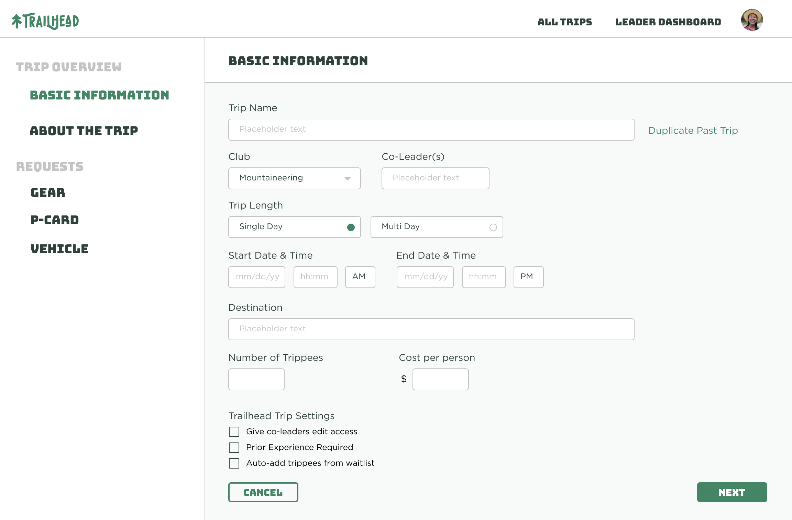

Trailhead 2.0
Trailhead v1 was great, but there were so many things we could do better. Dartmouth's Outdoor Programs Office contacted me in 2021 to help with a redesign of Trailhead's platform with 2 main goals: Improve the user experience for all users (trip leaders, participants and approvers) and give the site more personality.
User Research
I spent a few weeks conducting user research to improve Trailhead for users. I surveyed 70+ trip leaders, who use the site to create trips and manage the participants ("trippees") to find ways to streamling the trip creation process and brainstorm nice-to-haves. I conducted 1-on-1 interviews with Outdoor Programs Office members who manage the approval process (approving a trip, gathering gear, and assigning purchase cards and vehicles) to understand how their workflow transitioned from paper-based process to an online platform. Throughout this research phase, I collaborated closely with Rory Gawler, the Office's Assistant Director for Student Advising and the project's primary stakeholder, to make sure the designs followed the vision of making Trailhead a joy-to-use trips hub.

Interview with an Outdoor Programs Office member to understand frustrations with the existing platform
Wireframes
Based on findings from user research, I created wireframes to quickly show improvements we could make to user experience and additional features we could add that would make Trailhead a better experience for trip leaders and Outdoor Programs Office members.

Sample Club Illustrations
To add some visual interest, I created illustrations for each club. The illustrations appear on sign up pages and club pages

Cabin & Trail (Hiking)

Mountaineering

Viva Hardigg (formerly Women in the Wilderness)

Ledyard (Canoe and Kayaking)
Sample Page Redesigns
Below are a few of the pages I redesigned. I focused on maintaining the things folks liked while improving the user experience (reorganization of information) and adding in new features. In terms of style, we wanted the site to look clean but "crunchy", which I balanced with the white space and chalk-textured illustrations
All Trips Page

Trip Sign-Up Page

Create Trip Page
Previous Project
SuperBill
Next Project
Haven